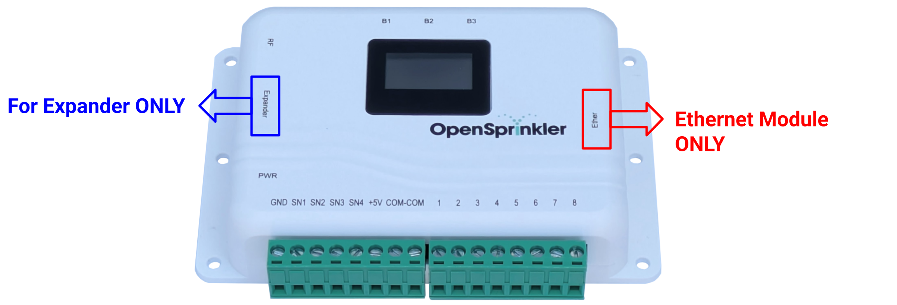

Instruções de Solução de Problemas
Note
Esta página cobre as etapas mais comuns de solução de problemas. Para suporte técnico adicional, visite o Portal de Suporte ou os Fóruns da Comunidade. Antes de abrir um tíquete de suporte, certifique-se de ler atentamente o Manual do Usuário, as Perguntas Frequentes (FAQs) e os problemas comuns listados nesta página.
Identifique seu Hardware e Firmware
Antes de buscar suporte, você deve identificar as versões de hardware e firmware do seu OpenSprinkler.
Encontre sua Versão de Hardware
- Pelo App/Web UI: Na página inicial, deslize da esquerda para a direita para abrir o menu lateral. Toque em Sobre; você verá a versão do hardware listada lá.
- Durante a Inicialização: Desligue e ligue o controlador; a versão do hardware é exibida brevemente no LCD durante a inicialização.
- Verifique a Etiqueta: O painel traseiro do seu controlador normalmente possui uma etiqueta mostrando a versão.
- Caso contrário: Verifique os detalhes do seu pedido ou anexe uma foto nítida do seu controlador em um tíquete de suporte.
Encontre sua Versão de Firmware
- Pelo App/Web UI: Na página inicial, deslize da esquerda para a direita para abrir o menu lateral. Toque em Sobre; você verá a versão do firmware listada lá.
- Durante a Inicialização: Desligue e ligue o controlador; a versão do firmware é exibida brevemente no LCD durante a inicialização.
Entendendo as Versões de Hardware, Firmware e Aplicativo A página Sobre mostra três números de versão diferentes:
- Hardware refere-se à versão física. Exemplo:
v3.3,OSPi. A única maneira de atualizar o hardware é comprando um novo controlador. - Firmware refere-se ao software executado no controlador. Exemplo:
2.2.1(3). Consiste em uma versão com pontos (ex:2.2.1) e um número de compilação (build) entre parênteses. O firmware pode ser atualizado, embora não seja automático: você deve carregar manualmente um novo firmware para ele. - App refere-se ao aplicativo móvel ou interface web em execução no seu telefone ou navegador. Exemplo:
2.4.90. O aplicativo/UI é atualizado automaticamente no seu celular quando uma nova versão é lançada na loja.
Fiação e Solenoides
Teste de Resistência do Solenoide Antes de ligar o sistema pela primeira vez, realize um teste de resistência do solenoide. Este teste pode determinar de forma rápida e eficaz se o problema é com solenoides ou fiação defeituosa. Você precisará de um multímetro configurado para medir Resistência (Ω).
- Desligue o sistema. NÃO meça a resistência com o sistema sob tensão.
- Meça a resistência entre o fio COM (comum) e cada fio de zona individualmente.
- Verifique os resultados:
- Um solenoide de 24VAC Normal deve medir entre 20 a 60 Ω.
- Uma resistência muito baixa (~0 Ω) indica um curto-circuito no solenoide ou na fiação.
- Uma resistência muito alta (>1000 Ω) indica um solenoide queimado ou fio rompido.
- Uma resistência baixa, mas não 0 (4-10 Ω) indica válvulas solenoides do tipo Latching (Travamento). Você deve confirmar verificando o corpo da válvula para ver se há alguma etiqueta como 'Latch/Latching'.
A tensão AC está presente entre o COM e uma zona mesmo quando essa zona está DESLIGADA. Se não houver carga (ou seja, solenoide) conectada ao controlador, é normal medir uma tensão parasita (flutuante), mesmo quando nenhuma zona estiver ligada. Isso NÃO indica um controlador defeituoso. A tensão flutuante desaparece assim que os solenoides são devidamente conectados.
Múltiplas zonas ligam assim que a energia é aplicada. Provavelmente você usou uma fonte DC em um controlador projetado para AC. Os modelos AC requerem uma fonte de saída AC: verifique a etiqueta da fonte para ver se especifica AC na tensão de saída (ex: 24VAC). Se não tiver certeza, verifique com um multímetro.
As zonas ligam, mas não desligam a menos que a energia seja removida. Mesma causa raiz acima: você provavelmente usou uma fonte DC em uma unidade AC.
Nenhuma das minhas zonas liga, ou o consumo de corrente é muito baixo (ex: <100mA).
- Verifique se o controlador ainda liga (por exemplo, se o visor LCD acende ou mostra dados). Se não, a fonte de alimentação pode estar queimada e precisa ser substituída. Verifique com um multímetro.
- Verifique duas vezes o fio COM (comum) - um fio COM solto ou quebrado impede que todas as zonas sejam ativadas.
- Inspecione o fusível dentro do controlador: desligue a energia, abra a carcaça e inspecione o fusível na parte inferior esquerda da placa de circuito. Se o fusível estiver queimado, substitua-o por um de especificação semelhante.
- Geralmente, um fusível queimado indica um curto-circuito no solenoide, fiação ou abertura de muitas zonas ao mesmo tempo. Faça um teste de resistência do solenoide imediatamente.
Algumas zonas ligam, mas outras não. Primeiro, faça um teste de resistência do solenoide para descartar falhas no solenoide ou na fiação. Se as leituras estiverem normais, abra a carcaça do controlador, tire uma foto nítida e verifique se há danos visíveis na placa (marcas de queimadura/descoloração, componentes estufados). Se tiver dúvidas, abra um tíquete de suporte e anexe a foto — inclua as versões de hardware/firmware e descreva os sintomas.
Fonte de Alimentação e Expansores
Meu controlador não liga. Se o controlador não ligar mais (e o visor LCD estiver apagado), siga estas etapas:
- Desconecte tudo: Desconecte a energia e remova todos os periféricos (expansores, cabo de rede Ethernet, sensores).
- Verifique a fonte de alimentação: Use um multímetro para verificar a saída da fonte. Por exemplo, uma fonte de 24VAC deve medir entre 24-30V AC; uma de 7.5VDC deve medir 7.5V DC. Se a leitura for zero ou muito baixa, substitua a fonte de alimentação.
- Inspeção visual: Abra a carcaça do controlador e verifique se há danos visíveis na placa de circuito (componentes estufados, marcas de queimaduras/descolorações). Verifique o fusível também.
- Entre em contato com o suporte: Se a fonte estiver em boas condições e não houver danos visíveis na placa de circuito, ligue-a novamente (mas mantenha todos os periféricos desconectados por enquanto). Se o problema persistir, envie uma foto legível da placa num tíquete de suporte.
Depois de conectar um expansor, o controlador não liga mais. Isso acontece se o expansor for rotacionado ou conectado por engano no barramento de Ethernet cabeada em vez do barramento do Expansor. Desligue a energia imediatamente, desconecte o expansor e conecte-o na entrada correta marcada como 'Expander'. Veja a ilustração abaixo.

O expansor não é detectado pelo controlador.
- Verifique a conexão: O expansor está conectado à porta correta? (consulte a questão acima).
- Reinicie o controlador para permitir a detecção automática de expansores.
- Verifique na interface: Acesse a página inicial do OpenSprinkler → Opções → Gerenciamento de Estações. Sob Número de Estações, você verá o total de canais disponíveis (incluindo os expansores):
- Se apresentar mais de
8canais, os expansores foram identificados com sucesso. Selecione quantos canais você deseja ativar usando a lista suspensa. - Caso contrário, o cabo flat ou o próprio expansor podem estar com defeito. Envie um tíquete de suporte.
- Se apresentar mais de
Não consigo ver nenhuma zona de expansão. Primeiro, verifique se o expansor foi detectado (consulte o procedimento acima). Tenha em mente que as novas canais não são ativadas automaticamente após a detecção; você deve habilitá-las manualmente na interface sob Opções de Estações.
O expansor é reconhecido, mas as zonas nele não funcionam.
- Confirme a detecção: Verifique as etapas acima.
- Verifique o fio COM (comum): Todas os solenoides devem estar conectados ao terminal COM do controlador principal. Caso contrário, elas não serão acionadas.
- Faça o teste de resistência do solenoide para descartar problemas nas válvulas ou fiação.
- Verifique as zonas da placa principal: Se as primeiras 8 zonas também apresentarem falha, há grandes chances de fusível queimado ou fio COM solto. Se os demais funcionarem bem na placa principal, pode ser um problema específico nas saídas do expansor.
Como conectar múltiplos expansores?
- Desligue o controlador principal: Sempre remova a alimentação elétrica antes de alterar conexões de expansores.
- Cascateamento: Conecte o próximo expansor ao anterior utilizando as saídas traseiras e cabos incluídos.
- Endereço único (DIP): Cada placa de expansão deve possuir um ID único. Os interruptores DIP estão na parte traseira do expansor. Defina os IDs de acordo com as instruções; IDs idênticos farão com que o controlador principal se confunda.
- Ligue e valide: Execute os passos de detecção acima.
Tenho múltiplos expansores mas alguns funcionam e outros não.
- Interruptores DIP: Conforme mencionado no item anterior, garanta que cada expansor possua um ID exclusivo configurado.
- Teste individual: Desligue a energia, desencaixe os expansores e teste conectando apenas um por vez ao controlador básico para isolar cabos ou módulos defeituosos.
Redefinição e Configuração
Qual a senha padrão do dispositivo?
Após uma restauração de fábrica, a senha padrão é opendoor. Não há nome de usuário. Essa senha é usada exclusivamente para acessar a interface Web local ou app móvel. Altamente recomendável alterar essa senha no primeiro acesso por questões de segurança.
Esqueci a senha do meu dispositivo. Como recuperar o acesso? Você pode contornar a senha editando as configurações através dos botões físicos presentes na placa do controlador:
- Reinicie o controlador. Assim que surgir o logotipo do OpenSprinkler, mantenha o botão B3 pressionado até visualizar no visor LCD: Setup Options (Opções de Configuração).
- Clique em B3 repetidas vezes até chegar na tela Ignore Password (Ignorar Senha). Selecione Yes clicando nos botões B1 ou B2.
- Segure B3 até o controlador reiniciar. Agora você pode efetuar o login usando qualquer senha (ou vazio).
- Altere sua senha de administrador imediatamente e redefina a opção Ignore Password para No.
Mudei meu roteador/nome da rede WiFi (SSID) / senha. Como redefinir o WiFi do controlador? Reiniciar no modo AP (Access Point): Mantenha o botão B3 pressionado e pressione B2 rapidamente (em até 1-2 segundos). Confirme no visor de LCD. O OpenSprinkler reiniciará em seu modo de ponto de acesso básico de WiFi. Siga as orientações descritas no Guia de Configuração de WiFi.
Caso o atalho com os botões não funcione, realize a restauração de fábrica completa (ver item abaixo).
Como fazer a restauração de fábrica completa?
Warning
A restauração de fábrica apagará todas as configurações, programas, arquivos de histórico e dados medidos. Se possuir acesso à rede, faça um backup de exportação (instruções abaixo) para restabelecer os dados com facilidade.
- Reinicie o controlador. Assim que surgir o logotipo na tela de LCD, mantenha o botão B1 pressionado até exibir: Factory Reset?.
- Valide se a seleção está como Yes.
- Pressione e segure o botão B3 até o controlador reinicializar completamente.
- Após a restauração, a senha padrão de rede será
opendoore o WiFi iniciará em modo AP básico.
Se possuir um controlador do tipo OSPi executando sob Linux, veja as etapas para OSPi.
Como salvar minhas configurações (fazer backup)?
Info
Copias de segurança de exportação regulares facilitam a restauração de programas e históricos no futuro do sistema. Também são muito úteis para anexar em tíquetes de suporte.
Acesse a página inicial do OpenSprinkler, deslize do lado esquerdo para o direito para abrir o menu lateral e toque em Configuração exportar para salvar o arquivo de dados.
O controlador mostra apenas uma tela branca ao abrir. Como realizar backup?
Veja as etapas em Resolução de problemas de interface abaixo. No passo 4, utilize a chamada direta /ja para ler e salvar o arquivo JSON bruto de configurações.
Conexão
Problemas de conexão WiFi Se o seu OpenSprinkler v3.x não está conectando ou caindo a conexão com a rede sem fio, siga:
- Verifique o modo de rede: O controlador está em modo AP (LCD indica 4 linhas de texto e ponto piscando rápido)? Se sim, siga a configuração no guia.
- Roteador ou senhas alterados recentemente? Realize o procedimento de redefinição de WiFi descrito no tópico de redefinições acima.
- Requisitos de rede sem fio (WiFi):
- Apenas 2.4 GHz: O chip sem fio opera apenas em redes de 2.4 GHz. Redes de 5 GHz não são compatíveis. Garanta SSID exclusivos em redes híbridas.
- Segurança de criptografia: Utilize autenticação do tipo WPA2-PSK (AES) ou misto (WPA/WPA2). Criptografias WPA3 exclusivas ou redes empresariais no padrão Enterprise não são aceitas.
- Formatos de transmissão: Configure para redes de padrão b/g/n (no ax).
- Configuração de canal: largura de banda fixa em 20 MHz; canais preferenciais 1, 6 ou 11.
- Recursos especiais: Desative o Smart Connect ou direcionamento de bandas (band steering).
- Configure PMF (Protected Management Frames) como opcional ou desativado.
- Redes sem fio operando sob regras captive portal ou filtragem de MAC devem possuir exclusão criada para o controlador.
- Testes alternativos: Caso o WiFi não conecte de forma alguma com o seu roteador principal, tente habilitar o ponto de acesso WiFi no celular de 2.4 GHz para testar o pareamento local.
- Use rede física cabeada: Adquira um módulo oficial de Ethernet cabeada para dispensar a necessidade de conexão sem fio.
Para OSPi: A conexão Wifi é gerenciada internamente pela placa do Raspberry Pi. Certifique-se de fonte de alimentação estável do RPi (Raspberry Pi 3/4/5 podem demandar energia via USB adicional sob redes sem fio intensas).
Problemas com rede física de Ethernet (cabo) Caso seu controlador não estabeleça conexão pela rede de cabo, siga:
- Indicadores em LEDs: O conector RJ-45 deve possuir um LED fixo (link) and outro piscando ao trafegar dados. Se não piscarem, teste em outra porta do roteador/switch com outro cabo.
- Sem suporte a PoE: O módulo de rede cabeada da placa não aceita alimentação PoE. Sistemas alimentados com PoE ativo nessas saídas podem sofrer perda de comunicação e danos físicos.
- DHCP habilitado: Mantenha a configuração sob DHCP automático no controlador e crie uma reserva estática (reserva de IP por endereço MAC) em seu roteador. IPs fixos configurados de forma manual sem dados de DNS ou gateway válidos podem sofrer quedas frequentes.
- Reinicializações agendadas: Caso sua rede sofra perda eventual de buffers de tráfego, agende rotinas de reinício automático no OpenSprinkler utilizando anotações de agendamento de programas. Consulte o manual em Anexos de nomes de programas.
Interface de Usuário, Aplicativos, Relógio e Displays
Página branca ao carregar a página inicial
- Firmware obsoleto: Se o firmware for anterior ao formato de weather data moderno (versões inferiores a
2.2.0), dados climáticos farão com que a página inicial retorne vazia. Conecte pelo atualizador local e realize a atualização do firmware. - Terminal desenvolvedor (Logs de erro): Abra o console do navegador no PC (tecla F12 no Chrome -> console) e digite o IP do OpenSprinkler. Verifique erros na tela.
- Resetar origem da UI: Modificações de caminhos podem travar a resposta inicial da página Web local. Digite o endereço
http://ip-do-aspersor/suno navegador e redefina os campos deUI Sourcepara o modo básico ('default'). - Arquivos JSON corrompidos: Faça o download do arquivo de validação API validation tool. Execute localmente em seu navegador web inserindo o IP do controlador. Caso mostre mensagens como
INVALID JSON, houve alguma gravação corrompida. - Soluções via API: Corrija os campos com erros utilizando chamadas via endpoint ou proceda instalando um backup limpo.
- Restauração de fábrica física: Se as opções de sistema Web não reestabelecerem os acessos, force a restauração de fábrica física pelos botões físicos.
Alterações nos programas de rega não são salvas. Geralmente relacionada a firmware do controlador ou aplicativo celular desatualizados. Execute a atualização.
O relógio do meu aspersor apresenta dados de hora incorretos. O relógio utiliza sincronia dupla: o fuso horário geográfico é definido pela sua Localização (Location) de geocódigo inserida e o relógio local é sincronizado via servidor de rede NTP:
- Localização e Conexão de Internet: Vá em Opções e verifique se as configurações de localização estão corretas. IPs estáticos sem tabelas de DNS ou Gateway falharão ao contactar as rotas correspondentes dos servidores NTP públicos na nuvem.
- Defina Fuso Horário de forma manual: Em casos de redes locais isoladas sem internet estável, clique para limpar o campo de Localização e adicione o seu Fuso Horário preferencial de forma isolada na interface.
- Servidores NTP: Mantenha a configuração padrão do servidor NTP em
0.0.0.0para utilizar servidores geográficos em formato dinâmico. - No OSPi, o relógio local e serviços NTP são definidos via sistema operacional Linux Raspbian da placa.
Minhas válvulas acionam no horário incorreto. Efetue os procedimentos acima de relógio e fuso horário.
Uma válvula aciona mesmo com as suspensões climáticas ativas.
Certifique-se de que a opção de atributos da estação não esteja marcada como Ignore Rain (Ignorar Chuva) ou Ignore Sensor. Abra as propriedades da estação clicando no ícone de engrenagem individual correspondente.
Meus programas agendados não estão executando.
- Verifique se o programa correspondente de rega está ativado (flag de status visível).
- Confira a hora interna do controlador.
- Verifique se no controle principal não está ativa alguma suspensão de clima (Rain Delay / Rain Sensor).
- Vá em opções e verifique se a ação climática inteligente de suspensão sob o uso de clima não reduziu o tempo a 0%.
Específicos para OSPi (Raspberry Pi HAT)
Confusão entre comandos RS485 e "bash" em traces
Ao configurar uma zona RS485 no OSPi, usuários monitorando o trace do sistema (ex. usando strace) podem notar execuções contínuas de bash ou /bin/sh e erroneamente acreditar que o firmware usa scripts bash para enviar comandos RS485.
Isso está incorreto. O firmware envia comandos RS485 nativamente através da biblioteca C++ libmodbus. Os comandos bash em segundo plano são na verdade chamadas raspi-gpio consultando continuamente os botões de hardware. Se os seus comandos RS485 não estão funcionando, geralmente é porque:
1. Arquivo rs485 ausente: O arquivo rs485 no diretório OpenSprinkler está ausente ou aponta para o caminho USB errado.
2. Permissão negada: O usuário que está executando o firmware não está no grupo dialout (sudo usermod -aG dialout $USER), impedindo silenciosamente o acesso USB.
Rotas de Compilação do Firmware O firmware compila perfeitamente nas versões modernas de sistema (Debian Bullseye, Bookworm ou Trixie). Erros de compilação geralmente estão associados a pacotes básicos ausentes de biblioteca ou versões muito antigas do sistema operacional.
Restauração Física de Fábrica no OSPi
- Abra o terminal remoto do Raspberry Pi.
- Vá para a biblioteca do OpenSprinkler compilada:
cd ~/OpenSprinkler-Firmware. - Digite a instrução para remoção dos dados:
sudo rm -f done.dat. - Reinicie o Raspberry Pi para que o sistema de persistência recrie as opções padrões originais.